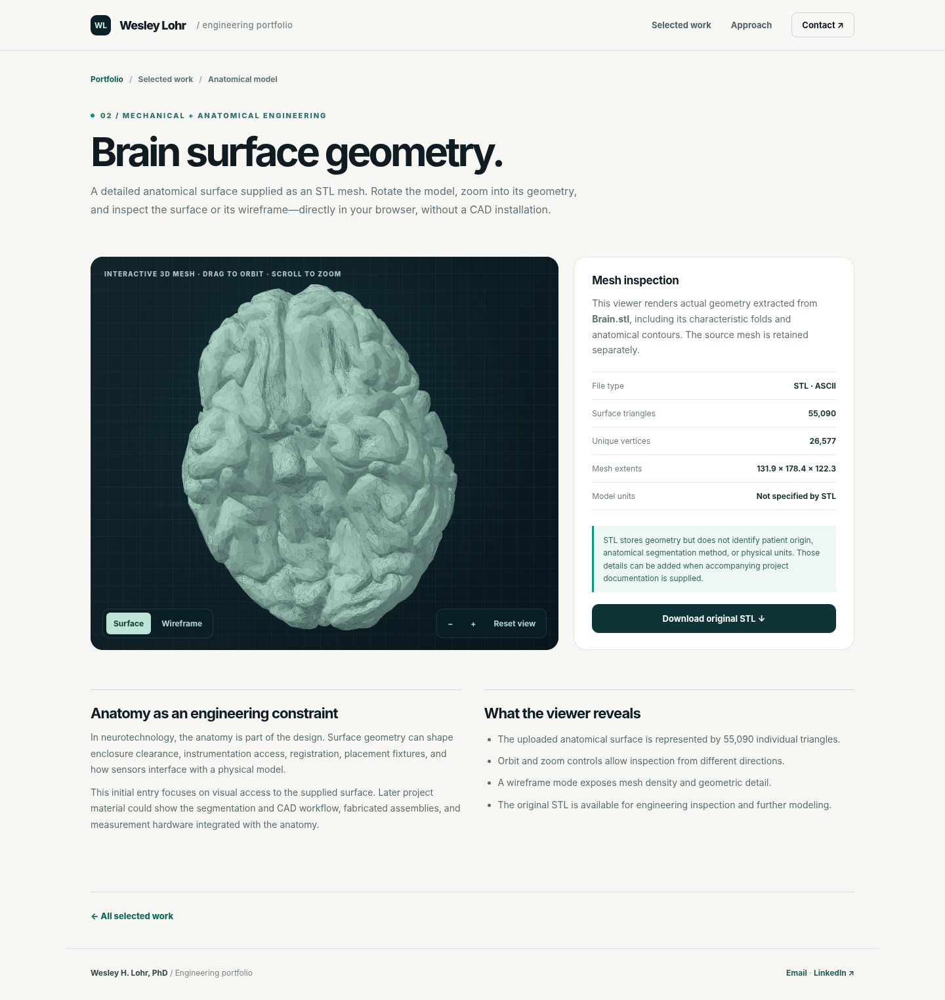

Where anatomy meets instrumentation.
I develop experimental neurotechnology by connecting anatomy, electrical measurement, mechanical design, and materials engineering. My work is built around a simple standard: a measurement is only as good as the hardware behind it.

Selected work, under the surface.
Design studies, experimental systems and instrument development documented with original figures from my VCU dissertation and interactive previews.

Human head platform
MRI-derived anatomy translated into surface models and manufacturing geometries.

Rhesus macaque platform
Cross-species segmentation and anatomically constrained physical modeling.

Rat head platform
Model geometry prepared for electrical field measurement and coil assessment.

Measurement instrumentation
Three-channel amplifier development, isolation, data acquisition and interference troubleshooting.

Electrodes & probe interfaces
Miniature sensing electrodes, winding tools, geometry, connections and placement.

CAD, tooling & fixtures
Molds, enclosures, probe fixtures, sample mounts and experimental rigs.

Measurement & modeling data
Conductivity experiments, induced fields, focality and penetration studies.
Design is part of the experiment.
Reliable neurotechnology asks you to think beyond the individual component. A probe changes the field it measures; a connector changes the ground path; a conductive material is only as useful as its processing and geometry. I build systems with those interactions in mind.
My research has moved between simulation, benchtop electronics, precision fabrication and clinical questions. This site shows the practical decisions behind that work rather than presenting research outcomes in isolation.